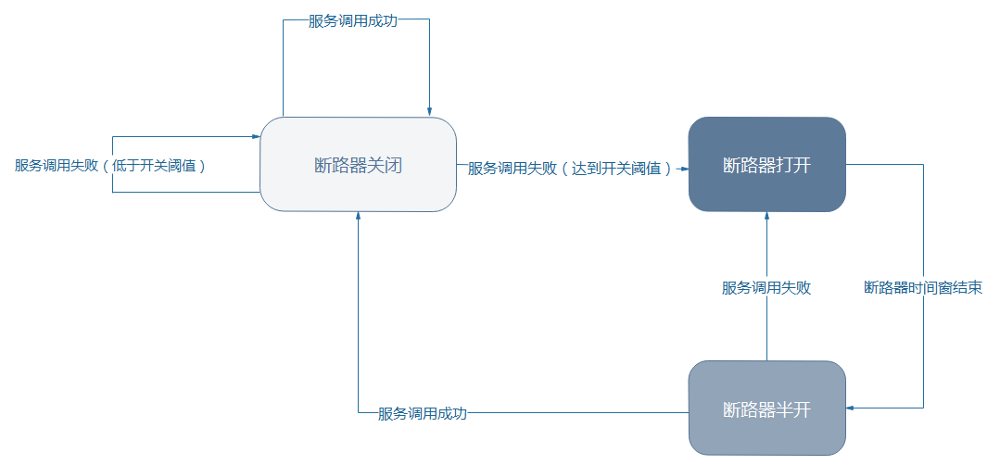

<!DOCTYPE HTML>
<html lang="zh-CN">
<head><meta name="generator" content="Hexo 3.8.0">
    <!--Setting-->
    <meta charset="UTF-8">
    <meta name="viewport" content="width=device-width, user-scalable=no, initial-scale=1.0, maximum-scale=1.0, minimum-scale=1.0">
    <meta http-equiv="X-UA-Compatible" content="IE=Edge,chrome=1">
    <meta http-equiv="Cache-Control" content="no-siteapp">
    <meta http-equiv="Cache-Control" content="no-transform">
    <meta http-equiv="pragma" content="no-cache">
    <meta http-equiv="Cache-Control" content="no-cache, must-revalidate">
    <meta http-equiv="expires" content="Mon Apr 06 2020 02:12:39 GMT+0800 (CST)">
    <meta name="renderer" content="webkit|ie-comp|ie-stand">
    <meta name="apple-mobile-web-app-capable" content="周立的博客 - 关注Spring Cloud、Docker">
    <meta name="apple-mobile-web-app-status-bar-style" content="black">
    <meta name="format-detection" content="telephone=no,email=no,adress=no">
    <meta name="browsermode" content="application">
    <meta name="screen-orientation" content="portrait">
    <meta name="theme-version" content="1.2.3">
    <meta name="root" content="/">
    
    <!--SEO-->

    <meta name="keywords" content="Spring Cloud,Hystrix,断路器">


    <meta name="description" content="至此，我们已实现服务发现、负载均衡，同时，使用Feign也实现了良好的远程调用——我们的代码是可读、可维护的。理论上，我们现在已经能构建一个不错的分布式应用了，但微服务之间是通过网络通信的，网络可能出问题；微服务本身也不可能100%可用。
如何提升应用的可用性呢？这是我们必须考虑的问题——
举...">


<meta name="robots" content="all">
<meta name="google" content="all">
<meta name="googlebot" content="all">
<meta name="verify" content="all">
    <!--Title-->


<title>跟我学Spring Cloud（Finchley版）-12-微服务容错三板斧 | 周立的博客 - 关注Spring Cloud、Docker</title>


    <link rel="alternate" href="../../atom.html" title="周立的博客 - 关注Spring Cloud、Docker" type="application/atom+xml">


    

    


<link rel="stylesheet" href="../../static/css/bootstrap.min-271a649e0635d6fa1b.css">
<link rel="stylesheet" href="../../static/css/font-awesome.min-ac2bebcf7fb5b26.css">
<link rel="stylesheet" href="../../static/css/style-6f3c140f6eee20e6591da00ec0.css">


    


    <script>
        var _hmt = _hmt || [];
        (function() {
            var hm = document.createElement("script");
            hm.src = "https://hm.baidu.com/hm.js?13766878cde148282622871dd245a973";
            var s = document.getElementsByTagName("script")[0];
            s.parentNode.insertBefore(hm, s);
        })();
    </script>


    

</head>

</html>
<!--[if lte IE 8]>
<style>
    html{ font-size: 1em }
</style>
<![endif]-->
<!--[if lte IE 9]>
<div style="ie">你使用的浏览器版本过低，为了你更好的阅读体验，请更新浏览器的版本或者使用其他现代浏览器，比如Chrome、Firefox、Safari等。</div>
<![endif]-->

<body>
    
    <nav class="main-navigation">
    <div class="container">
        <div class="row clearfix">
            <div class="col-md-12 column">
                <nav class="navbar navbar-default" style="background-color:#fff;border:0;margin-bottom:0" role="navigation">
                    <div class="navbar-header">
                        <button type="button" class="navbar-toggle" data-toggle="collapse" data-target="#navbar-collapse-1">
                            <span class="sr-only">切</span>
                            <span class="icon-bar"></span>
                            <span class="icon-bar"></span>
                            <span class="icon-bar"></span>
                        </button>
                        <a class="logo" href="../../index.html">
                            周立的博客
                        </a>
                    </div>

                    <div class="collapse navbar-collapse" style="border:0;" id="navbar-collapse-1">
                        <ul class="nav navbar-nav">
                            
                                
                                    <li>
                                        <a href="../../about.html" target="_blank">
                                            <i class="fa fa-user"></i>
                                            关于我
                                        </a>
                                    </li>
                                
                            
                                
                                    <li>
                                        <a href="../../archives.html" target="_blank">
                                            <i class="fa fa-archive"></i>
                                            归档
                                        </a>
                                    </li>
                                
                            
                                
                                    <li class="dropdown">
                                        <a href="#" class="dropdown-toggle" data-toggle="dropdown" data-hover="dropdown">
                                            <i class="fa fa-fire"></i>
                                            系列课程
                                            <strong class="caret"></strong>
                                        </a>
                                        <ul class="dropdown-menu">
                                            
                                                <li>
                                                    <a href="../../docker/00-docker-lession-index.html" target="_blank">
                                                        <i class="fa "></i>
                                                        Docker系列教程
                                                    </a>
                                                </li>
                                            
                                                <li>
                                                    <a href="../spring-cloud-index.html" target="_blank">
                                                        <i class="fa "></i>
                                                        Spring Cloud系列教程
                                                    </a>
                                                </li>
                                            
                                                <li>
                                                    <a href="../../spring-boot/spring-boot-index.html" target="_blank">
                                                        <i class="fa "></i>
                                                        Spring Boot系列教程
                                                    </a>
                                                </li>
                                            
                                        </ul>
                                    </li>
                                
                            
                                
                                    <li class="dropdown">
                                        <a href="#" class="dropdown-toggle" data-toggle="dropdown" data-hover="dropdown">
                                            <i class="fa fa-book"></i>
                                            开源书
                                            <strong class="caret"></strong>
                                        </a>
                                        <ul class="dropdown-menu">
                                            
                                                <li>
                                                    <a href="../../books/rocketmq.html" target="_blank">
                                                        <i class="fa fa-rocket"></i>
                                                        RocketMQ开发者指南
                                                    </a>
                                                </li>
                                            
                                                <li>
                                                    <a href="../../books/skywalking.html" target="_blank">
                                                        <i class="fa fa-skyatlas"></i>
                                                        Skywalking 6.2.0中文文档
                                                    </a>
                                                </li>
                                            
                                        </ul>
                                    </li>
                                
                            
                                
                                    <li class="dropdown">
                                        <a href="#" class="dropdown-toggle" data-toggle="dropdown" data-hover="dropdown">
                                            <i class="fa fa-cog"></i>
                                            工具
                                            <strong class="caret"></strong>
                                        </a>
                                        <ul class="dropdown-menu">
                                            
                                                <li>
                                                    <a href="../../tools/markdown2.html" target="_blank">
                                                        <i class="fa "></i>
                                                        微信排版工具2.0
                                                    </a>
                                                </li>
                                            
                                        </ul>
                                    </li>
                                
                            
                        </ul>
                        
                            <form id="search-form" class="navbar-form navbar-right">
                                <div class="form-group input-group">
                                    <input type="text" id="local-search-input" class="form-control" placeholder="搜我...">
                                    <span class="input-group-btn">
                                        <a class="btn btn-default">
                                            <i class="fa fa-search"></i>
                                        </a>
                                    </span>
                                </div>
                                <div id="local-search-result" class="local-search-result-cls"></div>
                            </form>
                        
                    </div>
                </nav>
            </div>
        </div>
    </div>
</nav>

    <a href="javascript:;" target="_blank">
        
    </a>


    <section class="content-wrap">
        <div class="container">
            <div class="row">
                <main class="col-md-8 main-content m-post">
                    

<p id="process"></p>
<article class="post">
    <div class="post-head">
        <h1 id="跟我学Spring Cloud（Finchley版）-12-微服务容错三板斧">
            
                跟我学Spring Cloud（Finchley版）-12-微服务容错三板斧
            
        </h1>
        <div class="post-meta">
    
        <span class="categories-meta fa-wrap">
            <i class="fa fa-folder-open-o"></i>
            <a class="category-link" href="javascript:;">Spring Cloud</a>
        </span>
    

    
        <span class="fa-wrap">
            <i class="fa fa-tags"></i>
            <span class="tags-meta">
                
                    <a class="tag-link" href="javascript:;">Hystrix</a> <a class="tag-link" href="javascript:;">Spring Cloud</a> <a class="tag-link" href="../../tags/断路器/index.html">断路器</a>
                
            </span>
        </span>
    

    
        
        <span class="fa-wrap">
            <i class="fa fa-clock-o"></i>
            <span class="date-meta">2019/01/16</span>
        </span>
        
            <span class="fa-wrap">
                <i class="fa fa-eye"></i>
                <span id="busuanzi_value_page_pv"></span>
            </span>
        
    
</div>
        
        
    </div>
    
    <div class="post-body post-content" id="post-content">
        
    <div class="toc-article">
        <strong>
            目录
        </strong>
        <div class="toc-content">
            <ol class="toc"><li class="toc-item toc-level-2"><a class="toc-link" href="#应用容错三板斧"><span class="toc-text">应用容错三板斧</span></a><ol class="toc-child"><li class="toc-item toc-level-3"><a class="toc-link" href="#超时机制"><span class="toc-text">超时机制</span></a></li><li class="toc-item toc-level-3"><a class="toc-link" href="#舱壁模式"><span class="toc-text">舱壁模式</span></a></li><li class="toc-item toc-level-3"><a class="toc-link" href="#断路器"><span class="toc-text">断路器</span></a></li></ol></li></ol>
        </div>
    </div>


        <p>至此，我们已实现服务发现、负载均衡，同时，使用Feign也实现了良好的远程调用——我们的代码是可读、可维护的。理论上，我们现在已经能构建一个不错的分布式应用了，但微服务之间是通过网络通信的，网络可能出问题；微服务本身也不可能100%可用。</p>
<p>如何提升应用的可用性呢？这是我们必须考虑的问题——</p>
<p><strong>举个例子</strong>：某大型系统中，服务A调用服务B，某个时刻，微服务B突然崩溃了。微服务A中，依然有大量请求在请求B，如果没有任何措施，微服务A很可能很快就会被拖死——因为<strong>在Java中，一次请求往往对应着一个线程</strong>，如果不做任何措施，那意味着微服务A请求B的线程要等Feign Client/RestTemplate超时才会释放（这个时间一般非常长，长达几十秒），于是就会有<strong>大量的线程被阻塞</strong>，而<strong>线程又对应着计算资源</strong>（CPU/内存），于是乎，大量的资源被浪费，并且越积越多，最终服务器终于没有资源给微服务A浪费了，微服务A也挂了。</p>
<p>因此，在大型应用中，微服务之间的容错必不可少，下面来讨论如何实现微服务的容错。</p>
<h2 id="应用容错三板斧"><a href="#应用容错三板斧" class="headerlink" title="应用容错三板斧"></a>应用容错三板斧</h2><h3 id="超时机制"><a href="#超时机制" class="headerlink" title="超时机制"></a>超时机制</h3><p>超时机制你懂的，配置一下超时时间，例如1秒——每次请求在1秒内必须返回，否则到点就把线程掐死，释放资源！</p>
<p><strong>思路</strong>：一旦超时，就释放资源。由于释放资源速度较快，应用就不会那么容易被拖死。</p>
<h3 id="舱壁模式"><a href="#舱壁模式" class="headerlink" title="舱壁模式"></a>舱壁模式</h3><p><strong>有兴趣的可以先了解一下船舱构造</strong>——一般来说，现代的轮船都会分很多舱室，舱室之间用钢板焊死，彼此隔离。这样即使有某个/某些船舱进水，也不会影响其他舱室，浮力够，船不会沉。</p>
<p><strong>软件世界里的仓壁模式可以这样理解：M类使用线程池1，N类使用线程池2，彼此的线程池不同，并且为每个类分配的线程池较小，例如coreSize=10</strong>。举个例子：M类调用B服务，N类调用C服务，如果M类和N类使用相同的线程池，那么如果B服务挂了，M类调用B服务的接口并发又很高，你又没有任何保护措施，你的服务就很可能被M类拖死。而如果M类有自己的线程池，N类也有自己的线程池，如果B服务挂了，M类顶多是将自己的线程池占满，不会影响N类的线程池——于是N类依然能正常工作，</p>
<p><strong>思路</strong>：不把鸡蛋放在一个篮子里。你有你的线程池，我有我的线程池，你的线程池满了和我没关系，你挂了也和我没关系。</p>
<h3 id="断路器"><a href="#断路器" class="headerlink" title="断路器"></a>断路器</h3><p>现实世界的断路器大家肯定都很了解，每个人家里都会有断路器。断路器实时监控电路的情况，如果发现电路电流异常，就会跳闸，从而防止电路被烧毁。</p>
<p><strong>软件世界的断路器可以这样理解</strong>：实时监测应用，如果发现在一定时间内失败次数/失败率达到一定阈值，就“跳闸”，断路器打开——此时，请求直接返回，而不去调用原本调用的逻辑。</p>
<p>跳闸一段时间后（例如15秒），断路器会进入半开状态，这是一个<strong>瞬间态</strong>，此时允许一次请求调用该调的逻辑，如果成功，则断路器关闭，应用正常调用；如果调用依然不成功，断路器继续回到打开状态，过段时间再进入半开状态尝试——通过”跳闸“，应用可以保护自己，而且避免浪费资源；而通过半开的设计，可实现应用的“自我修复“。</p>
<blockquote>
<p>TIPS：</p>
<p>断路器的提出人也是Martin Fowler，”微服务“这个名词被广泛了解，也和他有密不可分的关系。Martin Fowler的博客：<a href="javascript:;" target="_blank" rel="noopener">http://www.martinfowler.com</a> 。</p>
</blockquote>
<p>断路器状态转换可如下图所示：</p>
<p></p>
<p>本文较短，但相信已经用通俗的语言讲解了常见的几种容错机制——目前Spring Cloud生态中，支持的断路器有：Hystrix、Resilience4J、Alibaba Sentinel，虽然彼此实现有较大差异，但本质原理是相通的。</p>
<p>本节是断路器的基石，在理解原理后，你会发现用不同的实现只是使用的依赖和注解不大一样而已。</p>
<p>下一节，将着重讲解如何使用Hystrix实现微服务的容错。</p>

        <h2>相关文章</h2><ul><li><a href="../finchley-13/index.html">跟我学Spring Cloud（Finchley版）-13-通用方式使用Hystrix</a></li><li><a href="../finchley-14/index.html">跟我学Spring Cloud（Finchley版）-14-Feign使用Hystrix</a></li><li><a href="../finchley-15/index.html">跟我学Spring Cloud（Finchley版）-15-Hystrix监控详解</a></li><li><a href="../../spring-cloud-feign-ribbon-first-request-fail/index.html">Spring Cloud中，如何解决Feign/Ribbon第一次请求失败的问题？</a></li><li><a href="../../spring-cloud-alibaba-migration/spring-cloud-alibaba-2/index.html">Spring Cloud Alibaba迁移指南2：一行代码从Hystrix迁移到Sentinel</a></li></ul>
    </div>
    
    <div class="post-footer">
        <div class="col-sm-10">
            <div>
                <b>本文链接</b>：<a href="" target="_blank">跟我学Spring Cloud（Finchley版）-12-微服务容错三板斧</a>
            </div>
            <div>
                
                    转载声明：本博客由周立创作，采用 <a href="javascript:;" target="_blank"> CC BY 3.0 CN </a> 许可协议。可自由转载、引用，但需署名作者且注明文章出处。如转载至微信公众号，请在文末添加作者公众号二维码。
                
            </div>
            <div>
                
            </div>
        </div>
        <div class="col-sm-2">
            
        </div>
    </div>
</article>

<div class="article-nav prev-next-wrap clearfix">
    
        <a target="_blank" href="../finchley-13/index.html" class="pre-post btn btn-default" title="跟我学Spring Cloud（Finchley版）-13-通用方式使用Hystrix">
            <i class="fa fa-angle-left fa-fw"></i><span class="hidden-lg">上一篇</span>
            <span class="hidden-xs">跟我学Spring Cloud（Finchley版）-13-通用方式使用Hystrix</span>
        </a>
    
    
        <a target="_blank" href="../finchley-11/index.html" class="next-post btn btn-default" title="跟我学Spring Cloud（Finchley版）-11-Feign常见问题总结">
            <span class="hidden-lg">下一篇</span>
            <span class="hidden-xs">跟我学Spring Cloud（Finchley版）-11-Feign常见问题总结</span><i class="fa fa-angle-right fa-fw"></i>
        </a>
    
</div>


    <div id="comments">
        
   <p>评论系统未开启，无法评论！</p>

    </div>


                </main>
                
    <aside class="col-md-4 sidebar">
        
        <div class="widget about-me">
    <div class="row">
        <div class="col-md-5">
            
        </div>
        <div class="col-md-7">
            <a class="series-a" href="javascript:void(0)">公众号</a>
            <ul>
                <li>• 技术干货推送</li>
                <li>• 免费资料领取</li>
                <li><b>• 扫码领取更多惊喜</b></li>
            </ul>
        </div>
    </div>
    
        <div class="row">
            <div class="col-md-5">
                
            </div>
            <div class="col-md-7">
                <a class="series-a" href="javascript:void(0)">小程序</a>
                <ul>
                    <li>• 原创笔记</li>
                    <li>• 独家心法</li>
                    <li><b>• 扫码领取</b></li>
                </ul>
            </div>
        </div>
    
</div>


        
        
    <div class="ad">
        <div class="row">
            <div class="col-md-12">
                <a href="javascript:;" rel="nofollow" target="_blank">
                    
                </a>
            </div>
        </div>
    </div>


        
        <div class="widget">
    <div class="row">
        <div class="col-md-3">
            
        </div>
        <div class="col-md-9">
            <a class="series-a" target="_blank" href="../spring-cloud-index.html">Spring Cloud系列教程</a>
            <p>全面、通俗易懂的Spring Cloud教程</p>
        </div>
    </div>
    <div class="row">
        <div class="col-md-3">
            
        </div>
        <div class="col-md-9">
            <a class="series-a" target="_blank" href="javascript:;">Spring Cloud Alibaba视频教程</a>
            <p>全网唯一，你值得拥有</p>
        </div>
    </div>
    <div class="row">
        <div class="col-md-3">
            
        </div>
        <div class="col-md-9">
            <a class="series-a" target="_blank" href="../../docker/00-docker-lession-index.html">Docker系列教程</a>
            <p>Docker系列</p>
        </div>
    </div>
    <div class="row">
        <div class="col-md-3">
            
        </div>
        <div class="col-md-9">
            <a class="series-a" target="_blank" href="../../spring-boot/spring-boot-index.html">Spring Boot系列教程</a>
            <p>Boot是基石...</p>
        </div>
    </div>
</div>


        
        
    <div class="widget">
        <h3 class="title">分类</h3>
        <ul class="category-list"><li class="category-list-item"><a class="category-list-link" href="javascript:;"><i class="fa" aria-hidden="true">Docker</i></a><span class="category-list-count">31</span></li><li class="category-list-item"><a class="category-list-link" href="javascript:;"><i class="fa" aria-hidden="true">Kubernetes</i></a><span class="category-list-count">2</span></li><li class="category-list-item"><a class="category-list-link" href="javascript:;"><i class="fa" aria-hidden="true">Spring Boot</i></a><span class="category-list-count">6</span></li><li class="category-list-item"><a class="category-list-link current" href="javascript:;"><i class="fa" aria-hidden="true">Spring Cloud</i></a><span class="category-list-count">94</span></li><li class="category-list-item"><a class="category-list-link" href="javascript:;"><i class="fa" aria-hidden="true">Spring Cloud Alibaba</i></a><span class="category-list-count">16</span></li><li class="category-list-item"><a class="category-list-link" href="javascript:;"><i class="fa" aria-hidden="true">Spring Cloud Stream</i></a><span class="category-list-count">1</span></li><li class="category-list-item"><a class="category-list-link" href="../../categories/其他/index.html"><i class="fa" aria-hidden="true">其他</i></a><span class="category-list-count">13</span></li><li class="category-list-item"><a class="category-list-link" href="../../categories/安装教程/index.html"><i class="fa" aria-hidden="true">安装教程</i></a><span class="category-list-count">7</span></li><li class="category-list-item"><a class="category-list-link" href="../../categories/工作/index.html"><i class="fa" aria-hidden="true">工作</i></a><span class="category-list-count">20</span></li></ul>
    </div>


        
        
        
        

        
    </aside>

            </div>
        </div>
    </section>
    <footer class="main-footer">
    <div class="container">
        <div class="row">
        </div>
    </div>
</footer>

<a id="back-to-top" class="icon-btn hide">
	<i class="fa fa-chevron-up"></i>
</a>


    <div class="copyright">
    <div class="container">
        <div class="row">
            <div class="col-sm-12">
                <div class="busuanzi">
    
        访问量:
        <strong id="busuanzi_value_site_pv">
            <i class="fa fa-spinner fa-spin"></i>
        </strong>
        &nbsp; | &nbsp;
        访客数:
        <strong id="busuanzi_value_site_uv">
            <i class="fa fa-spinner fa-spin"></i>
        </strong>
        &nbsp; <strong>Since 2018-12-26</strong>
    
</div>

            </div>
            <div class="col-sm-12">
                <span>Copyright &copy; 2017
                </span> |
                <span>
                    Powered by <a href="javascript:;" class="copyright-links" target="_blank" rel="nofollow">Hexo</a>
                </span> |
                <span>
                    Theme by <a href="javascript:;" class="copyright-links" target="_blank" rel="nofollow">ITMuch</a>
                </span>
            </div>
        </div>
    </div>
</div>

<script src="../../static/js/jquery.min.js"></script>
<script src="../../static/js/bootstrap.min.js"></script>
<script src="../../static/js/bootstrap-hover-dropdown.min.js"></script>

    <script src="../../static/js/search-3f4fbd0557c869ca0516ebb5f.js"></script>


    <script async="" src="../../static/js/busuanzi.pure.mini.js"></script>


<script src="../../static/js/app-da10bb3b2ae5c8348d2bd2cc3faf.js"></script>


</body>
